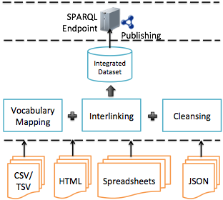
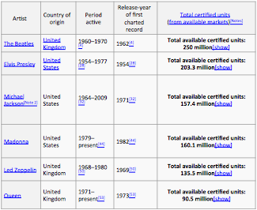
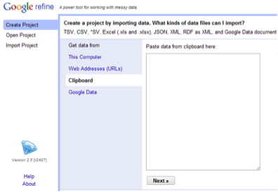
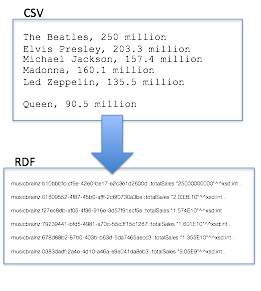
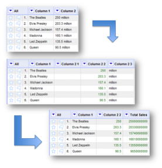
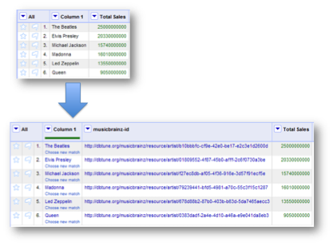
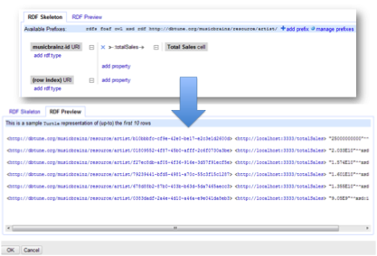

First, we will look at how RDF data can be created from tabular data such as that found in spreadsheets. This relates to the part of the architecture shown in Figure 3.26. Tabular data can be represented in a number of common formats. CSV (Comma Separated Values) and TSV (Tab Separated Values) are two common plain text formats for representing tables. Tables can also be represented in HTML and in spreadsheet applications. Tabular data can also be represented in JSON (Javascript Object Notation), originally developed for use with the Javascript language and now a common data interchange format on the Web.
The transformation of tabular data to an RDF dataset will involve mapping items mentioned in tables to existing vocabularies, interlinking to entities for other datasets and to some extent data cleansing where alternative names or mistyped names for items mentioned in the tables need to be handled.

Figure 26: Integrating chart data.
Below we can see an example of data represented in CSV format. This shows sales data for a number of music artists. Each row is divided into two cells by the comma. So, for example, the first row tells us that The Beatles have sold 50 million records. Elvis Presley is not far behind with 203.3 million records.
The Beatles, 250 million
Elvis Presley, 203.3 million
Michael Jackson, 157.4 million
Madonna, 160.1 million
Led Zeppelin, 135.5 million
Queen, 90.5 million
Below we can see the first row of sales data represented in JSON format. Here the rank order of the artists based on sales is made explicit as an additional column in the data. The cells in the data also have labels, reflecting the column labels you might find in a HTMTL table, and which are also implicit in the CSV format.
{
"artist": {
"class": "artist",
"name": "The Beatles"
},
"rank": 1,
"value": 250 million
},
…
Finally, in Figure 27 we see sales data represented as a HTML table. Here we have explicit column labels and also additional information related to the active period and first release of each artist.

Figure 27: List of best-selling music artists (from [23]).
We will now look at how OpenRefine [24] can be used to translate tabular formats to RDF. The OpenRefine tool was originally developed by the company Metaweb as a way of extracting data for Freebase, a vast collaborative knowledgebase of structured data. This tool later became GoogleRefine and was then renamed OpenRefine when released as an open source project. When using OpenRefine, the first step is to create a project and import tabular data in a format such as Microsoft Excel or CSV.

Figure 28: Importing data to OpenRefine.
Movie 5: Screencast of OpenRefine.
As illustrated in Figure 3.29, OpenRefine assists us in transforming a tabular format such as CSV to RDF data. A number of processes are involved in this transformation. First, we can see that the serialisation has changed from comma-separated rows of data to RDF data in Turtle format. Second, the artists listed in the first column have been transformed from text strings to MusicBrainz URIs. Third, the sales figures have been transformed to a number with an integer data type. Finally, we have a relation (totalSales) linking the artist to the number. We will now look step-by-step at how this transformation is carried out.

Figure 29: Translating CSV data to RDF.
The first step involves defining the rows and columns of the dataset. This can involve deleting columns not required in the RDF data and splitting columns based on specified conditions. To help with this process OpenRefine provides a powerful expression language called OpenRefine Expression Language. This has a number of functions for dealing with different types of data such as Booleans, strings, and mathematical expressions. The OpenRefine Expression Language is also still often known by the acronym GREL. This dates back to when it was known as the Google Refine Expression Language.
In the example of Figure 3.30, we used GREL to split the word “million” from the number in Column 2 to create Columns 2 2 and 2 3. We then multiply Column 2 2 by the number 1,000,000 to create the Total Sales column.

Figure 30: Data transformation in OpenRefine.
We then need to map the artists listed in Column 1 to MusicBrainz URIs. For this we can use the RDF Refine plugin developed by DERI (www.deri.ie). The process of mapping between multiple representations of the same thing (in this case artists represented by a string and a MusicBrainz URI) is known as entity reconciliation. Entity reconciliation can be carried out against the SPARQL endpoint of an RDF dataset. Textual names for things (such as The Beatles) are matched against the text labels associated with the entities in the dataset. In the figure the artist names have been reconciled with the MusicBrainz URIs listed in a column headed musicbrainz-id.

Figure 31: Entity reconciliation in OpenRefine.
The data is then transformed into RDF triples. In the example of Figure 3.32, we have specified that a triple should be generated for each row in which the MusicBrainz URI is connected to the Total Sales data by the totalSales property. The RDF Preview tab shows what the first 10 rows of data will look like as RDF triples.

Figure 32: Previewing RDF triples in OpenRefine.